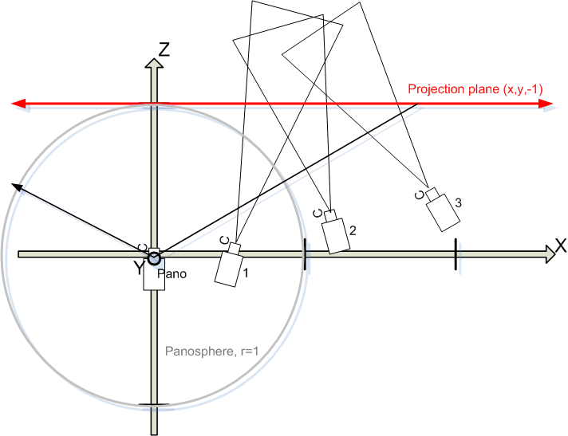

Stitching a photo-mosaic
This section is a stub.
Definition of photo-mosaic
A photo-mosaic is an image that is stitched together by photographs all taken from different viewpoints. This differs from the panorama where all images are taken from one single viewpoint but with different angles.
The typical case of a photo-mosaic is the linear panorama[*], where one large subject like a wall, is photographed by taking photos of the wall, each covering a proportion of the wall, and moving the camera parallel to the wall with each shot.
The classical way to stitch these kinds of mosaics was to lay the prints out on a light-table and glue them together. Now with the mosaic-mode in the panotools lens model, it is possible to use the software estimate the camera position including angles, lens distortion etc. and to re-project and stitch the images to a photo-mosaic.
Understanding the mosaic lens model
Parameters
The panotools lens model has been expanded with addition of three new parameters that describe the camera position in [cartesian coordinates[1][*]], TrX, TrY, and TrZ
The yaw, pitch and roll angles now apply on the camera around the camera's TrX, TrY and TrZ position in space. Together these six parameters describe where the camera viewpoint is (TrX,TrY,TrZ) and the direction the camera's optical axis point(y,p,r).
Mosaic lens model
In order to generate a photo-mosaic from the individual images, the panotools lens model re-projects the images in the following way.
- Each image is projected onto a plane with the coordinates of (0,0,1). This re-projection is using all the lens model's parameters. The position parameters describe above, as well as FOV, distortion. etc
- The plane is projected onto the panosphere
- The panorama camera, which gives the viewpoint of the photo mosaic, sits in the center of the panosphere and looks straight ahead at the panosphere (and the perpendicular projection plane). This camera gives the FOV of the whole photo-mosaic
To illustrate the model, consider the following picture, which looks straight down at a photo mosaic which consists of three images taken "to the right" of the center.
- The unit-panosphere[*] is drawn in gray.
- "The panorama camera" is centered in Origo, X,Y,Z =0
- Three photos are taken with camera positions 1, 2 and 3 by varying TrX,TrZ and Yaw
- The photos are reprojected to a plane (red) that touches the panosphere in (0,0,1) and then onto the panosphere using the "Panorama camera"
[*]
![[*]](http://wiki.panotools.org/File:Illustration4.png){kind=link}
Result
Because the projection plane is a plane and perpendicular to the panorama camera, there will be miss-fit when this assumption is not true for the real-world subject. For example, photos of a flat wall mural could be rendered perfect, while a three dimensional subject would not be.